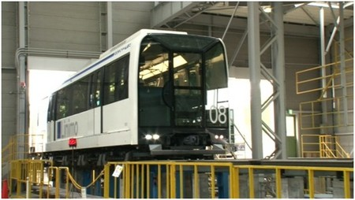
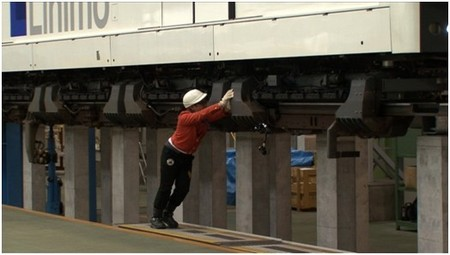
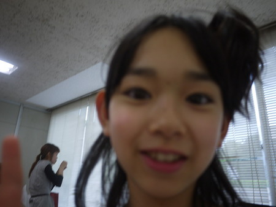
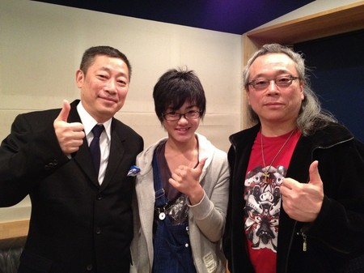
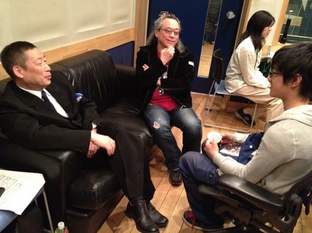
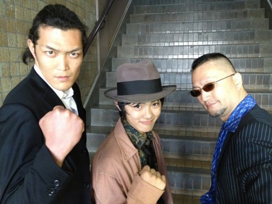
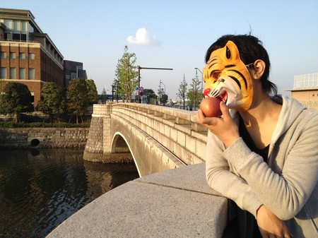

【乗りすけFile】 No.37 磁気浮上式リニアモーターカー
乗りすけFile No.37：磁気浮上式リニアモーターカー
（５月１６日放送）


全長：42m
全高：約3.4m
全幅：約2.5m
重量：52t
定員：224名
磁力で浮上するリニアモーターカー。車輪はなく、レールを電磁石が抱え込んでいる。
電気を流すと磁力が発生し、重さ52ｔの車体が8mm浮き上がる。宙に浮いた状態で走行するため摩擦がなく、騒音や振動を極少まで抑えることができる。
最高速度は100km/h。新幹線の約2倍という加速性能を持つ。急勾配にも強い。
運転は車両基地の司令室からの遠隔操作で行う。
乗りすけ・島田は車両基地にて浮いている車両を手で押して動かすことに成功した。
これまでの【乗りすけFile】はこちら
投稿者:大天才テレビジョン社員１号 | 投稿時間:18時42分 | カテゴリ：乗りすけさん | 固定リンク


 " title="ソーシャルブックマークについて">
" title="ソーシャルブックマークについて">
※NHKサイトを離れます。
【雨】竹原司
こんにちは！司で〜す。 ５月６日の雨と風すごかったですね。
僕はちょうど道を歩いていたときに雨がふってきて、体に雹が体に当たってすごくいたかったです。
風もすごくて「ボウボウ」いってました。
やっぱり僕は雨が苦手です。
でも今から梅雨のシーズンに入るのでいやです。早く夏が来てくれるといいのに〜と思っています。
でも雨で地球の体温を調節したり、花や野菜を育てているから、なんだかんだ言ってやっぱり感しゃしています。
雨ありがとう〜〜〜〜！
でもあんまり強く降らないでいてくれ〜！
次に書くのは・・・
次に書くてれび戦士は…黒澤ちゃんです！

黒澤ちゃんはすごくしっかりしていて、この前みんなでしゃべっていて声が大きかったから
「しずかにして！」とおこられました。
それじゃしっかりものの黒澤ちゃん、まかせた〜！
大天才テレビジョン広報部からの業務連絡：竹原さん、「まかせた〜！」は良いんだけど写真がピンぼけですよ。
投稿者:竹原司 | 投稿時間:18時00分 | カテゴリ：We are 大天才テレビジョン | 固定リンク
" title="ソーシャルブックマークについて">
※NHKサイトを離れます。
【MTK】「冒険少年R」
現在放送中のMTK「冒険少年R」は長江崚行のソロ。
作曲・編曲はムーンライダーズのギター番長こと白井良明さん。
作詞は言葉のロックアーティスト、森雪之丞さんです。
一筋縄ではいかない仕掛けのたくさんある楽曲に
これぞジュブナイルというドキリとするような言葉の数々が乗りました。
テーマは少年の日常と冒険と成長。
冒険少年RのRは崚行のRであり、REALのRです。
崚行と同世代、青春まっただ中の皆さんに聴いてほしい一曲です。

左：森雪之丞さん 中：長江崚行 右：白井良明さん

音楽界の大家ふたりに将来の進路についてなど聞かれる崚行。

MVのロケ現場にて、強面のふたりとともに。

小道具の虎のお面が気に入ったようだ。
投稿者:大天才テレビジョン社員１号 | 投稿時間:13時00分 | カテゴリ：お知らせ！ | 固定リンク
" title="ソーシャルブックマークについて">
※NHKサイトを離れます。